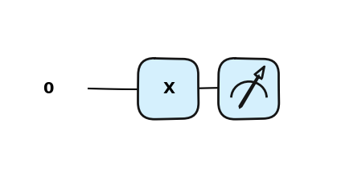

import pennylane as qml
def qc(): # from quantum circuit
qml.Hadamard(wires=0)
return qml.counts()Pennylane wprowadzenie
Obiekt Qnode będziemy używać do definicji obwodów kwantowych. Obiekt ten wspiera wiele bibliotek do obliczeń numerycznych, tzw. interfejsów: - NumPy, - PyTorch, - TensorFlow, - JAX
Domyślnie QNodes używa interfejs NumPy. Dzięki niemu mamy dostęp do optymalizatorów domyślnych z biblioteki Pennylane. Pozostałe interferjsy wymagają użycia optymalizatorów z innych pakietów.
PennyLane oferuje kilka symulatorów: - ‘default.qubit’, - ‘default.mixed’, - ‘lightning.qubit’, - ‘default.gaussian’, - ‘default.clifford’, - ‘default.tensor’
Kod Pennylane
Pennylane pozwala zrealizować obwód kwantowy (ang. quantum circuit) jako funkcję w Pythonie.
wires oznacza kwantowy podsystem - czyli nasz pojedynczy kubit. Liczymy od 0 nie od 1.
- Funkcja kwantowa może pobierać klasyczne pamaretry
- Funkcja kwantowa może zawierać klasyczny flow (przepływ) twojego programu
forczyif else.
Zbiór kwantowych operatorów
Uruchomienie obwodu kwantowego
Uruchomienie odbywa się po wyborze device z określeniem ilości kubitów (wires)
# domyślnie
dev = qml.device("default.qubit", wires=1)# można nadać własne nazwy kubitów
dev_unique_wires = qml.device("default.qubit", wires=['q1','aux'])W przypadku gdy będziemy chcieli powtórzyć wielokrotnie wykonanie obwodu w celu zebrania statystyki wyników mozemy zdefiniować parametr shots
# shots
shots_list = [5,10,1000]
dev = qml.device("default.qubit", wires=1, shots=shots_list)qml.QNode - łączy naszą kwantową funkcję ze środowiskiem na którym chcemy ją wykonać
circ = qml.QNode(qc, dev)circ()({'0': tensor(2, requires_grad=True), '1': tensor(3, requires_grad=True)},
{'0': tensor(6, requires_grad=True), '1': tensor(4, requires_grad=True)},
{'0': tensor(486, requires_grad=True), '1': tensor(514, requires_grad=True)})Łatwiej skorzystać z dekoratora @qml.qnode bezpośrednio przy definicji funkcji kwantowej
dev = qml.device("default.qubit", wires=1, shots=1000)
@qml.qnode(dev)
def circuit():
qml.Hadamard(wires=0)
return qml.counts()circuit(){'0': tensor(505, requires_grad=True), '1': tensor(495, requires_grad=True)}Konstrukcja obwodów kwantowych w Pennylane
Na ostatnich zajęciach wyprodukowaliśmy klasyczną i kwantową sieć neuronową realizowaną w bibliotece PyTorch i Pennylane.
Kod naszej wartwy ukrytej w której użyliśmy obwodu kwantowego realizował następujące obiekty i funkcje:
import pennylane as qml
n_qubits = 2
dev = qml.device("default.qubit", wires=n_qubits)
@qml.qnode(dev)
def qnode(inputs, weights):
qml.AngleEmbedding(inputs, wires=range(n_qubits))
qml.BasicEntanglerLayers(weights, wires=range(n_qubits))
return [qml.expval(qml.PauliZ(wires=i)) for i in range(n_qubits)]Obwody kwantowe składają się z rejestrów, które reprezentują poszczególne kubity.
Domyślnie kubity inicjalizujemy w stanie 0.
Liczbę rejestrów możesz ustalić parametrem wires przy definicji środowiska wykonawczego device.
dev = qml.device("default.qubit", wires=1)Operacje wykonywane na kubitach nazywamy bramkami.
Operacje te można wykonywać na jednym albo i wielu kubitach na raz.
Domyślnie będziemy optymalizować algortymy aby składały się z jak najmniejszej ilości bramek działających na dużą liczbę kubitów.
Graficznie można rozumieć realizację algorytmu jako stosowanie bramek na poszczególnych kubitach.
W bibliotece PennyLane, obwody kwantowe reprezentowane są przez kwantowe funkcje, realizowane przez klasyczne funkcje w pythonie.
Schemat kodu penny lane możemy zapisać jako:
import pennylane as qml
def my_quantum_function(params):
# Single-qubit operations with no input parameters
qml.Gate1(wires=0)
qml.Gate2(wires=1)
# A single-qubit operation with an input parameter
qml.Gate3(params[0], wires=0)
# Two-qubit operation with no input parameter on wires 0 and 1
qml.TwoQubitGate1(wires=[0, 1])
# Two-qubit operation with an input parameter on wires 0 and 1
qml.TwoQubitGate2(params[1], wires=[0, 1])
# Return the result of a measurement
return qml.Measurement(wires=[0, 1])Przykładowo
def my_first_circuit(theta):
qml.Hadamard(wires = 0)
qml.CNOT(wires = [0,1])
qml.RZ(theta, wires = 0)
return qml.probs(wires = [0,1])Matematycznie całość możemy zapisać jako:
import pennylane as qml
from pennylane import numpy as np
dev = qml.device("default.qubit", wires=2)
#dev = qml.device("default.qubit", wires=2, shots=1000)
@qml.qnode(dev)
def circ(theta):
qml.Hadamard(wires = 0)
qml.CNOT(wires = [0,1])
qml.RZ(theta, wires = 0)
return qml.state()
# return qml.probs(wires = [0,1])
circ(np.pi)tensor([4.32978028e-17-0.70710678j, 0.00000000e+00+0.j ,
0.00000000e+00+0.j , 4.32978028e-17+0.70710678j], requires_grad=True)print(qml.draw(circ)(np.pi))0: ──H─╭●──RZ(3.14)─┤ State
1: ────╰X───────────┤ Stateqml.draw_mpl(circ)(np.pi)import matplotlib.pyplot as plt
qml.drawer.use_style("sketch")
fig, ax = qml.draw_mpl(circ)(np.pi)
plt.show()qml.drawer.use_style("pennylane_sketch")
fig, ax = qml.draw_mpl(circ)(np.pi)
plt.show()Matplotlib is building the font cache; this may take a moment.Obwody z jednym kubitem
\[ \ket{\psi}=\ket{0} \] Przedstawmy obwód kwantowy z jednym kubitem. Funkcja kwantowa zwraca nam stan kubitu po realizacji obwodu.
- Obwód z jednym kubitem bez bramek.
dev = qml.device("default.qubit", wires=1)
@qml.qnode(dev)
def qc():
return qml.state()qc()tensor([1.+0.j, 0.+0.j], requires_grad=True)wektor \([1,0]\) można interpretować jako stan \(\ket{0}\) czyli jako wartość bitu \(0\).
Natomiast wykorzystując metodę qml.probs() możesz zwrócić kwadraty amplitud czyli prawdopodobieństow otrzymania 0 i 1.
import pennylane as qml
dev = qml.device("default.qubit", wires=1)
@qml.qnode(dev)
def qc2():
return qml.probs(wires=0)
qc2()tensor([1., 0.], requires_grad=True)- Zobaczmy jak zainicjalozować stan \(\ket{1}= [0,1]^T\) \[ \ket{\psi}=\ket{1} \]
from pennylane import numpy as np
from pennylane.ops import StatePrep
stan = np.array([0,1]) # stan do inicjalizacji
@qml.qnode(dev)
def qc():
StatePrep(stan, wires=0)
return qml.state()
qc()tensor([0.+0.j, 1.+0.j], requires_grad=True)@qml.qnode(dev)
def qc():
StatePrep(stan, wires=0)
return qml.probs()
qc()tensor([0., 1.], requires_grad=True)- utwórzmy pełną superpozycję stanu 0 i 1. \[ \ket{\psi}=\frac{1}{\sqrt{2}} (\ket{0} + \ket{1} ) \]
stan = np.array([1/np.sqrt(2), 1/np.sqrt(2)])
@qml.qnode(dev)
def qc_s():
qml.StatePrep(stan,wires=0)
return qml.state()
print(f"amplitudy: {qc_s()}")
@qml.qnode(dev)
def qc_p():
qml.StatePrep(stan,wires=0)
return qml.probs()
print(f"prwadopodobieństwa: {qc_p()}")
print(f"test czy amp^2 = prawdopodobienstwo: {qc_s()**2 == qc_p()}")amplitudy: [0.70710678+0.j 0.70710678+0.j]
prwadopodobieństwa: [0.5 0.5]
test czy amp^2 = prawdopodobienstwo: [ True True]Stany dwukubitowe
\[ \ket{\psi}=\ket{00} \] \[ \ket{\psi}=\ket{01} \] \[ \ket{\psi}=\ket{10} \] \[ \ket{\psi}=\ket{11} \]
dev = qml.device("default.qubit", wires=2)
@qml.qnode(dev)
def qc():
return qml.state()
qc()tensor([1.+0.j, 0.+0.j, 0.+0.j, 0.+0.j], requires_grad=True)\[ \ket{\psi}=\frac{1}{2}\left( \ket{00} + \ket{01} + \ket{10} + \ket{11} \right) \]
dev = qml.device("default.qubit", wires=2)
stan = np.array([1/2, 1/2, 1/2, 1/2])
prawd = [i**2 for i in stan]
print(f"test: suma prawdopodobienst {np.sum(prawd)}")
@qml.qnode(dev)
def qc():
StatePrep(stan, wires=[0,1])
return qml.state()
qc()test: suma prawdopodobienst 1.0tensor([0.5+0.j, 0.5+0.j, 0.5+0.j, 0.5+0.j], requires_grad=True)ZADANIE Napisz funkcję generującą stan jednego kubitu jako funkcję kąta \(\theta\)
def stan_kubitu(theta):
pass # Twoj kod \(\ket{\psi}= [\cos(\frac{\theta}{2}), \sin(\frac{\theta}{2})]\)
Wygeneruj obwód z pojedynczym kubitem inicjalizujący stan \(\ket{0}\) , \(\ket{1}\) oraz \(\frac{1}{\sqrt{2}} (\ket{0} + \ket{1} )\)
Bramki jako operacje na kubitach
Bramka X
Bramka X-gate reprezentowana jest przez macierz Pauli-X :
\[ X = \begin{pmatrix} 0 & 1 \\ 1 & 0 \\ \end{pmatrix} \]
Bramka X obraca kubit w kierunku osi na sferze Bloch’a o \(\pi\) radianów. Zmienia \(|0\rangle\) na \(|1\rangle\) oraz \(|1\rangle\) na \(|0\rangle\). Jest często nazywana kwantowym odpowiednikiem bramki NOT lub określana jako bit-flip.
\[ \sigma_x \ket{0} = \ket{1} \,\,\, \sigma_x\ket{1} = \ket{0} \]
dev = qml.device("default.qubit", wires=1)
@qml.qnode(dev)
def qc():
qml.X(wires=0)
return qml.state()
qc()tensor([0.+0.j, 1.+0.j], requires_grad=True)dev = qml.device("default.qubit", wires=1)
@qml.qnode(dev)
def qc():
qml.PauliX(wires=0)
return qml.state()
qc()tensor([0.+0.j, 1.+0.j], requires_grad=True)qml.draw_mpl(qc)()
dev = qml.device("default.qubit", wires=1)
@qml.qnode(dev)
def qc():
qml.PauliX(wires=0)
qml.X(wires=0)
return qml.state()
qml.draw_mpl(qc)()
qc()tensor([1.+0.j, 0.+0.j], requires_grad=True)
Jak bramka X działa na stan \(\ket{+}\), \(\ket{-}\) \(\ket{i}\) i \(\ket{-i}\)
Dowolna bramka unitarna
from pennylane import numpy as np
U = np.array([[1, 1], [1, -1]]) / np.sqrt(2)
dev = qml.device("default.qubit", wires=1)
@qml.qnode(dev)
def qc():
qml.QubitUnitary(U, wires=0)
return qml.state()
qml.draw_mpl(qc)()
qc()Bramka Hadamarda
Bramka Hadamarda przetwarza stan \(|0\rangle\) na kombinacje liniowa (superpozycje) \(\frac{|0\rangle + |1\rangle}{\sqrt{2}}\), co oznacza, że pomiar zwróci z takim samym prawdopodobieństwem stanu 1 lub 0. Stan ten często oznaczany jest jako: \(|+\rangle\).
\[ H = \frac{1}{\sqrt{2}}\begin{pmatrix} 1 & 1 \\ 1 & -1 \\ \end{pmatrix} \]
\[ H\ket{0} = \frac{\sqrt{2}}{2} (\ket{0}+ \ket{1})\] \[ H\ket{1} = \frac{\sqrt{2}}{2}(\ket{0}- \ket{1})\]
dev = qml.device("default.qubit", wires=1)
@qml.qnode(dev)
def qc():
qml.Hadamard(wires=0)
return qml.state()
qc()dev = qml.device("default.qubit", wires=1)
@qml.qnode(dev)
def qc():
qml.Hadamard(wires=0)
qml.Hadamard(wires=0)
return qml.state()
qc()dev = qml.device("default.qubit", wires=1)
@qml.qnode(dev)
def qc(state):
if state==1:
qml.X(wires=0)
qml.Hadamard(wires=0)
qml.PauliX(wires=0)
qml.Hadamard(wires=0)
return qml.state()
qc(0)qc(1)bramka SX
Bramka SX jest pierwiastkiem kwadratowym bramki X. Dwukrotne zastosowanie powinno reazlizowac bramkę X.
\[ SX = \frac{1}{2}\begin{pmatrix} 1+i & 1-i \\ 1-i & 1+i \\ \end{pmatrix} \]
dev = qml.device("default.qubit", wires=1)
@qml.qnode(dev)
def qc():
qml.SX(wires=0)
return qml.state()
qml.draw_mpl(qc)()
qc()dev = qml.device("default.qubit", wires=1)
@qml.qnode(dev)
def qc():
qml.SX(wires=0)
qml.SX(wires=0)
return qml.state()
qml.draw_mpl(qc)()
qc()Z gate
\[ Z = \begin{pmatrix} 1 & 0 \\ 0 & -1 \\ \end{pmatrix} = \begin{pmatrix} 1 & 0 \\ 0 & e^{i \pi} \\ \end{pmatrix} \]
Inne nazwy bramki: phase flip lub sign flip
dev = qml.device("default.qubit", wires=1)
@qml.qnode(dev)
def qc():
qml.Z(wires=0)
return qml.state()
qml.draw_mpl(qc)()
qc()dev = qml.device("default.qubit", wires=1)
@qml.qnode(dev)
def qc():
qml.PauliZ(wires=0)
return qml.state()
qml.draw_mpl(qc)()
qc()Jak bramka Z działa na stan \(\ket{+}\), \(\ket{-}\) \(\ket{i}\) i \(\ket{-i}\) ?
Jak zmieniają się prawdopodobieństwa wyników w bazie obliczeniowej?
RZ gate
Bramkę PauliZ można uogólnić i sparametryzować kątem. Dla \(\phi=\pi\) otrzymujemy bramkę \(\sigma_z\).
\[ \begin{pmatrix} 1 & 0 \\ 0 & -1 \\ \end{pmatrix} = \begin{pmatrix} 1 & 0 \\ 0 & e^{i \pi} \\ \end{pmatrix} = \begin{pmatrix} 1 & 0 \\ 0 & e^{i \phi} \\ \end{pmatrix} \]
\[ R_Z(\phi) = e^{-i \phi \frac{\sigma_z}{2} } \]
\[ RZ = \begin{pmatrix} e ^{-i \frac{\phi}{2} } & 0 \\ 0 & e ^{i \frac{\phi}{2} } \\ \end{pmatrix} = \cos(\frac{\phi}{2})I_2 - \sin(\frac{\phi}{2}) i\sigma_z \]
from pennylane import numpy as np
dev = qml.device("default.qubit", wires=1)
@qml.qnode(dev)
def qc(phi):
qml.RZ(phi=phi, wires=0)
return qml.state()
qc(np.pi/2)qml.draw_mpl(qc)(np.pi/2)from pennylane import numpy as np
dev = qml.device("default.qubit", wires=1)
@qml.qnode(dev)
def qc(phi):
qml.SX(wires=0)
qml.RZ(phi=phi, wires=0)
return qml.state()
qc(np.pi)Znajdz informacje o bramce \(S\), \(S^{\dag}\), \(T\), \(T^{\dag}\).